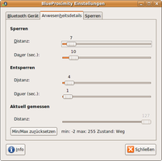

BlueProximity
Dieser Artikel wurde für die folgenden Ubuntu-Versionen getestet:
Dieser Artikel ist mit keiner aktuell unterstützten Ubuntu-Version getestet! Bitte diesen Artikel testen und das getestet-Tag entsprechend anpassen.
Zum Verständnis dieses Artikels sind folgende Seiten hilfreich:
BlueProximity  ist ein grafisches Werkzeug, mit dessen Hilfe die Verbindung von Bluetooth-Geräten zum Rechner überwacht werden kann. Ist das gewählte Gerät, zum Beispiel ein Mobiltelefon, für einen bestimmten Zeitraum außerhalb der Reichweite, kann der Bildschirm gesperrt oder ein beliebiger Befehl ausgeführt werden. Sobald man sich wieder dem Computer nähert, wird der Computer ohne Zutun des Nutzers entsperrt oder ein beliebiger Befehl ausgegeben. Das Programm unterstützt auch Deutsch als Sprache.
ist ein grafisches Werkzeug, mit dessen Hilfe die Verbindung von Bluetooth-Geräten zum Rechner überwacht werden kann. Ist das gewählte Gerät, zum Beispiel ein Mobiltelefon, für einen bestimmten Zeitraum außerhalb der Reichweite, kann der Bildschirm gesperrt oder ein beliebiger Befehl ausgeführt werden. Sobald man sich wieder dem Computer nähert, wird der Computer ohne Zutun des Nutzers entsperrt oder ein beliebiger Befehl ausgegeben. Das Programm unterstützt auch Deutsch als Sprache.
Installation¶
Installiert [1] wird das Programm mit folgendem Paket:
blueproximity (universe )
 mit apturl
mit apturl
Paketliste zum Kopieren:
sudo apt-get install blueproximity
sudo aptitude install blueproximity
Bedienung¶
Nach der Installation kann man BlueProximity bei Ubuntu-Varianten mit einem Anwendungsmenü über "Zubehör -> BlueProximity" starten [2]. Ein automatischer Start ist gewährleistet, wenn ein neuer Startprogramm-Eintrag erzeugt wird, welcher /usr/bin/blueproximity ausführt [3].
Nach dem ersten Start erscheint der Konfigurationsdialog. Zuerst sollte das eigene Mobiltelefon bzw. das gewünschte Bluetooth-Gerät mit dem Computer verbunden werden (Pairing). Dazu können die Bluetooth-Einstellungen der Desktopumgebungen oder Programme wie Blueman benutzt werden. Das Mobiltelefon sollte so eingestellt werden, dass Kontaktversuche des Rechners ohne separate Nachfrage akzeptiert werden. Ist dies erfolgt, muss BlueProximity das gewünschte Gerät mitgeteilt werden.
| Nach Geräten suchen |
|  |
| Anwesenheitsdetails |
| Sperren |
Hierzu sollte das Gerät auf "sichtbar" gestellt und auf "Suche nach Geräten" geklickt werden. Das Gerät sollte in der Liste erscheinen. Danach wird das Gerät per  -Klick ausgewählt und auf "Übernehme gewähltes Gerät" geklickt. Beim ersten Programmstart wird BlueProximity die neue Adresse erst bei Schließen des Dialogs anwenden, spätere Änderungen werden sofort umgesetzt.
-Klick ausgewählt und auf "Übernehme gewähltes Gerät" geklickt. Beim ersten Programmstart wird BlueProximity die neue Adresse erst bei Schließen des Dialogs anwenden, spätere Änderungen werden sofort umgesetzt.
Im Karteireiter "Anwesenheitsdetails" wird nun eingestellt, wie empfindlich BlueProximity reagieren soll. Dabei sind für An- und Abwesenheit jeweils zwei Werte zu setzen: der Distanzregler sowie die Dauer.
Der Sperrbefehl wird genau dann einmal aufgerufen, wenn die gemessene Distanz (zu finden im Tooltip des Icons sowie im aktuellen Reiter unter "Aktuell gemessen -> Distanz") für die angegebene Dauer größer oder gleich der eingestellten Distanz ist. Der Entsperrbefehl wiederum wird genau dann einmal aufgerufen, wenn die gemessene Distanz für die angegebene Dauer kleiner oder gleich der eingestellten Distanz ist.
Im Karteireiter "Sperren" wird eingestellt, wie sich BlueProximity bei An- und Abwesenheit verhalten soll. Das Verhalten gliedert sich in die Bereiche "Aktionskommandos" und "Protokollieren".
In den "Aktionskommandos" wird eingestellt welche Befehle BlueProximity bei Erkennung einer Abwesenheit, bei Wiedererscheinen sowie regelmäßig während einer Anwesenheit ausführt. "Sperrkommando" und "Entsperrkommando" werden dabei jeweils einmalig mit Eintritt des entsprechenden Ereignisses ausgeführt. Das "Anwesenheitskommando" wird dagegen jeweils einmal im darunter einstellbaren Intervall ausgeführt. Es können die Vorgaben (die Bildschirmschoner von GNOME und KDE) benutzt oder komplett eigene Befehle ausgeführt werden. Befehlsketten sollten hier vermieden und stattdessen in ein eigenes Skript gestellt werden.
Im Bereich "Protokollieren" ist einstellbar, wohin BlueProximity Änderungen der Anwesenheit protokolliert. Es kann unabhängig voneinander sowohl ins Syslog als auch in eine einstellbare Datei geloggt werden.
Hinweis:
Solange der Einstellungsdialog noch geöffnet ist, befindet sich BlueProximity im Simulationsmodus. Hier wird zwar eine Verbindung zum Bluetooth-Gerät aufgebaut und die Distanz gemessen, es wird aber der Sperrbefehl nicht ausgeführt. Ob mit den aktuellen Einstellungen und Distanz eine Sperrung durchgeführt würde, erkennt man unter der aktuell gemessenen Distanz hinter dem Wort "Zustand:". "Aktiv" und "Weg" stellen die beiden Zustände dar.
Wenn der Dialog geschlossen wird, schaltet sich BlueProximity scharf.
Problembehebung¶
Ab 14.04 kommt bei manchen Ubuntu-Varianten Light-Locker zum Einsatz. Möchte man damit den Bildschirm sperren, wird folgender Befehl benötigt:
light-locker-command -l
- Erstellt mit Inyoka
-
 2004 – 2017 ubuntuusers.de • Einige Rechte vorbehalten
2004 – 2017 ubuntuusers.de • Einige Rechte vorbehalten
Lizenz • Kontakt • Datenschutz • Impressum • Serverstatus -
Serverhousing gespendet von